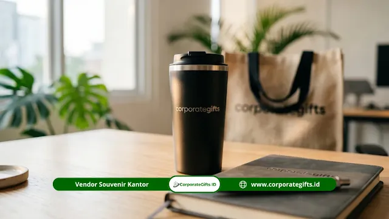

Corporate Gifts ID - Cara memilih vendor souvenir mitra sekolah swasta yang terpercaya adalah dengan melakukan evaluasi portofolio klien lembaga pendidikan, meminta sampel produk fisik, memverifikasi estimasi waktu produksi, dan memastikan sistem pembayaran yang transparan. Vendor yang tepat akan menjamin kualitas produk, ketepatan waktu pengiriman, dan representasi visual yang sesuai dengan citra serta standar kelembagaan sekolah swasta Anda.
Poin Kunci Panduan Memilih Vendor Souvenir:
- Portofolio Institusional: Evaluasi rekam jejak vendor dengan fokus pada klien dari sektor pendidikan formal dan korporat yayasan.
- Uji Sampel Fisik: Selalu minta sampel fisik atau digital proof sebelum konfirmasi pesanan massal untuk verifikasi material.
- Transparansi All-In: Pastikan penawaran mencakup biaya cetak, kemasan, MOQ, dan bebas dari biaya siluman (hidden cost).
- Waspadai Red Flag: Hindari vendor tanpa alamat legalitas jelas, menolak pembuatan sampel, atau memaksa pelunasan 100% di muka.
- Matriks Perbandingan: Bandingkan minimal tiga vendor terpercaya guna mendapatkan rasio harga, kualitas, dan garansi terbaik.
Mengapa Pemilihan Vendor Sangat Krusial untuk Souvenir Mitra Sekolah Swasta?
Bagi institusi pendidikan swasta, sekolah internasional, maupun madrasah unggulan, kemitraan strategis dengan institusi donor, universitas mitra, sponsor korporat, dan asosiasi industri adalah aset reputasi yang sangat bernilai. Pemilihan vendor souvenir mitra sekolah swasta yang kurang tepat berisiko mendatangkan kerugian berlapis: mulai dari keterlambatan pengiriman saat seremoni perpisahan atau penandatanganan MoU, hingga cacat visual logo yang merusak wibawa nama baik yayasan.
Souvenir yang diserahkan kepada pihak mitra bukan sekadar bingkisan formalitas, melainkan duta fisik yang mencerminkan standar profesionalisme, integritas, dan budaya mutu sekolah Anda. Cinderamata yang dibuat secara rapi, elegan, dan fungsional dari kategori souvenir kantor atau merchandise perusahaan akan terus digunakan mitra di meja kerja mereka, menciptakan eksposur brand positif yang bertahan bertahun-tahun.
Kriteria Utama Vendor Souvenir Mitra Sekolah Swasta
Untuk memastikan proses pengadaan berjalan mulus sesuai alokasi anggaran yayasan, perhatikan empat pilar kriteria utama yang wajib dipenuhi oleh calon mitra percetakan dan pengadaan merchandise Anda:
1. Portofolio dan Pengalaman Klien Institusional
Vendor yang telah terbiasa melayani sekolah swasta, yayasan keagamaan, dan kampus memiliki sensitivitas tinggi terhadap kode etik desain institusional. Mereka memahami pentingnya akurasi kode warna korporat (Pantone/CMYK), kerapian penempatan logo yayasan, serta pemilihan tone warna yang elegan dan tidak mencolok berlebihan.
Mintalah foto dokumentasi hasil kerja nyata di lapangan, bukan sekadar render grafis 3D dari katalog digital. Testimoni autentik atau dokumen purchase order sebelumnya dari lembaga pendidikan lain merupakan indikator sahih atas keandalan vendor tersebut.
2. Ketersediaan Sampel Produk dan Mockup
Vendor souvenir profesional selalu siap menyediakan layanan digital mock-up gratis dan opsi penyediaan sampel fisik sebelum produksi massal dimulai. Sampel produk memungkinkan panitia pengadaan memverifikasi langsung gramatur bahan, kehalusan jahitan totebag, kekuatan engsel hardbox, hingga presisi ukiran grafir laser pada tumbler stainless.
3. Transparansi Harga dan Rincian Biaya
Penawaran resmi yang diterbitkan vendor wajib memuat rincian terpadu (all-in cost). Pastikan penawaran harga sudah mencakup biaya unit produk, biaya pelat cetak atau film sablon, ongkos pengemasan box eksklusif berpita, serta perkiraan biaya logistik ke lokasi sekolah. Hindari vendor yang memberikan harga awal sangat murah namun kemudian menagih aneka biaya tambahan saat barang hendak dikirim.
4. Kejelasan Timeline dan Kapasitas Produksi
Waktu adalah faktor paling kritis dalam penyelenggaraan acara sekolah. Vendor kredibel selalu melampirkan jadwal kerja (timeline milestones) yang terukur: mulai dari batas akhir asistensi desain (proofing), durasi proses cetak massal, proses quality control per unit, hingga estimasi waktu transit ekspedisi ke gudang sekolah.

Proses verifikasi sampel fisik material merchandise memastikan warna dan logo yayasan tampil akurat sebelum naik cetak massal.
Langkah-Langkah Memilih Vendor Souvenir Mitra Sekolah
Terapkan alur kerja sistematis berikut agar panitia pengadaan atau bagian tata usaha sekolah dapat mengeksekusi seleksi vendor secara objektif:
Langkah 1: Kumpulkan Minimal 3 Kandidat Vendor
Gali referensi rekanan dari jaringan sekolah swasta mitra, asosiasi kepala sekolah, platform marketplace B2B, atau direktori vendor souvenir terpercaya seperti CorporateGifts.ID. Mengumpulkan minimal tiga opsi vendor memberikan Anda posisi tawar yang jauh lebih kuat dalam hal fleksibilitas harga dan kecepatan respons.
Langkah 2: Evaluasi Berdasarkan Kriteria Standar
Susun lembar verifikasi sederhana yang membandingkan kredibilitas legalitas (PT/CV), kepemilikan workshop atau kantor fisik, kelengkapan katalog produk, fleksibilitas batas minimum pemesanan (MOQ), serta ketersediaan sistem pembayaran berbasis invoice institusi.
Langkah 3: Minta Sampel dan Proof Desain Vector
Kirimkan file logo sekolah Anda dalam format vektor resolusi tinggi (.AI, .EPS, atau .PDF). Amati seberapa cepat dan presisi tim desainer vendor mengaplikasikan logo tersebut pada mock-up produk souvenir, seperti pada gift set pulpen metal, tumbler vakum, atau binder kulit sintetis.
Langkah 4: Negosiasi Harga dan Termin Pembayaran
Lakukan negosiasi berbasis skala volume order. Sekolah yang memesan dalam jumlah banyak berhak memperoleh potongan harga kuantitas, bonus free print logo, atau gratis biaya pengiriman lokal. Untuk skema pembayaran, standar institusional yang sehat adalah pembayaran uang muka (DP) 50% dan pelunasan 50% setelah barang selesai di-QC sebelum pengiriman.
Langkah 5: Konfirmasi dengan Surat Pesanan Tertulis (PO)
Kunci seluruh kesepakatan menggunakan Surat Perintah Kerja (SPK) atau Purchase Order resmi sekolah yang memuat spesifikasi teknis barang, jumlah pesanan, jadwal tenggat waktu maksimal, serta klausul jaminan ganti rugi apabila terjadi keterlambatan atau cacat produk.
Tanda Peringatan (Red Flag) Vendor yang Harus Diwaspadai
Demi menjaga keamanan anggaran institusi, waspadai tanda-tanda peringatan berikut saat berkomunikasi dengan calon vendor souvenir:
- Penawaran Harga Tak Masuk Akal: Harga yang dibanderol jauh di bawah standar pasaran patut dicurigai menggunakan bahan daur ulang berkualitas buruk atau tinta cetak yang mudah mengelupas.
- Tidak Ada Alamat Fisik / Workshop Resmi: Vendor yang hanya beroperasi lewat akun media sosial anonim tanpa kantor atau workshop yang jelas memiliki risiko wanprestasi yang sangat tinggi.
- Menolak Penyediaan Sampel: Sikap menolak memberikan mock-up atau sampel dummy biasanya menandakan vendor tersebut hanyalah perantara ketiga (makelar) tanpa kontrol mutu langsung atas lini produksi.
- Meminta Pelunasan 100% di Muka: Syarat pelunasan penuh sebelum barang diproduksi sangat berisiko bagi sekolah swasta jika terjadi keterlambatan atau ketidaksesuaian barang.
- Komunikasi Pasif dan Tidak Responsif: Vendor yang lambat merespons pertanyaan awal dapat dipastikan akan lebih sulit dihubungi saat pesanan memasuki fase produksi massal.
Matriks Evaluasi Kriteria Seleksi Vendor Souvenir
Gunakan matriks perbandingan berikut sebagai panduan standar panitia pengadaan sekolah swasta dalam mengaudit kapabilitas calon vendor souvenir:
| Parameter Seleksi | Standar Ideal Vendor Terpercaya | Risiko Vendor Non-Standar |
|---|---|---|
| Legalitas & Workshop | Memiliki badan usaha resmi (PT/CV), NPWP, rekening bank korporat, dan alamat workshop fisik terverifikasi. | Hanya perantara online lepas tanpa legalitas, risiko tinggi terjadi wanprestasi atau penipuan. |
| Verifikasi Sampel | Menyediakan free digital mock-up 3D dan pengiriman sampel fisik prototype sebelum naik cetak massal. | Menolak pembuatan sampel fisik; hasil produksi massal rawan salah warna dan spek meleset. |
| Kapasitas & Timeline | Timeline terstruktur tertulis (7-14 hari kerja) lengkap dengan garansi denda keterlambatan pengiriman. | Janji estimasi verbal tanpa kepastian; pesanan rawan molor dan mengacaukan agenda serah terima. |
| Struktur Harga | Penawaran harga all-in transparan meliputi item produk, branding logo, box kemasan, dan biaya antar. | Menyisipkan biaya tersembunyi (hidden fees) mendadak untuk plat cetak, packing, atau packaging. |
| Jaminan Kualitas (SOP QC) | Garansi ganti unit 100% atau cetak ulang gratis apabila ditemukan cacat produksi atau logo rusak. | Lepas tangan setelah pelunasan dan tidak menerima retur barang cacat produksi. |
Pertanyaan Seputar Vendor Souvenir Mitra Sekolah Swasta (FAQ)

Ditulis oleh: Arinda Zakia
Senior Corporate Gifting SpecialistPraktisi pengadaan cenderamata korporat dan konsultan gift set B2B di CorporateGifts.ID dengan spesialisasi kurasi merchandise institusi pendidikan, kemitraan sekolah, dan souvenir formal institusional.
Lihat Profil Lengkap & Panduan Lainnya